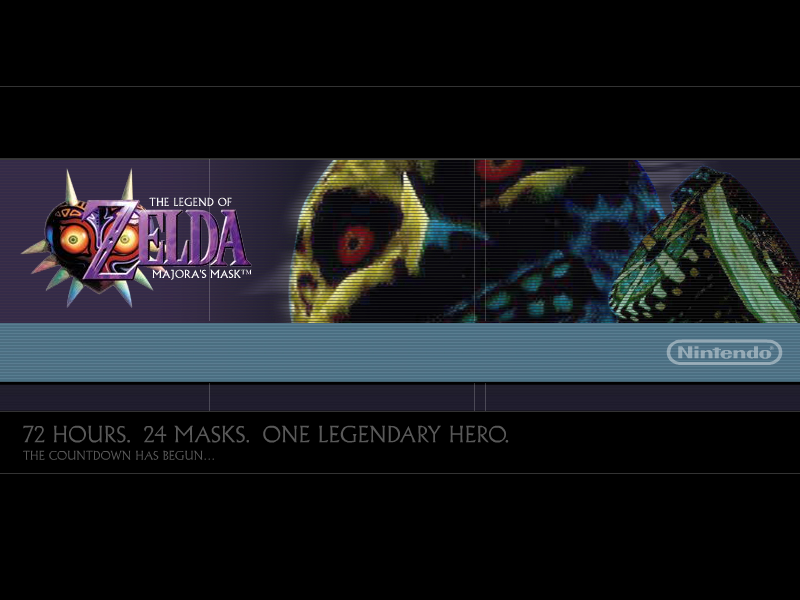
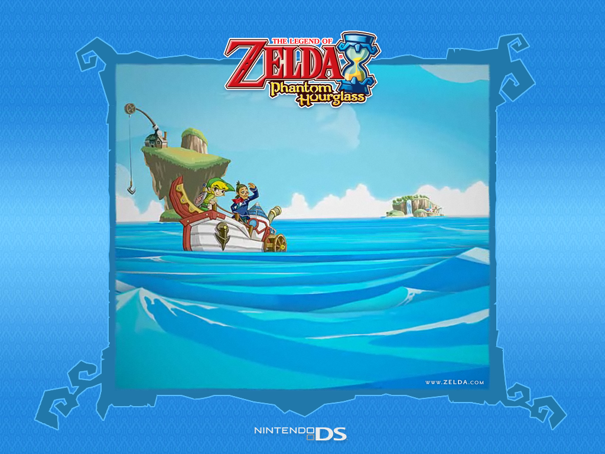

The Legend of Zelda Screensavers

The Legend of Zelda: Majora's Mask

DOWNLOAD
 .exe file zipped (800 x 600) (650 KB)
.exe file zipped (800 x 600) (650 KB)
.exe file zipped (1024 x 768) (790 KB)
.exe file zipped (1152 x 864) (650 KB)
The Legend of Zelda: The Wind Waker

DOWNLOAD
.exe file zipped (1.15 MB)
The Legend of Zelda: The Wind Waker (2)

DOWNLOAD
.exe file zipped (Windows) (1.20 MB)
.sit file (Mac OS 9/X) (2.77 MB)
The Legend of Zelda: Four Swords Adventures
 Screensaver.png)
DOWNLOAD
.exe file zipped (1.50 MB)
The Legend of Zelda: The Minish Cap

DOWNLOAD
.exe file zipped (2.30 MB)
The Legend of Zelda: Phantom Hourglass

DOWNLOAD
.exe file zipped (8.47 MB)
The Legend of Zelda: Skyward Sword

DOWNLOAD
.exe file zipped (6.09 MB)